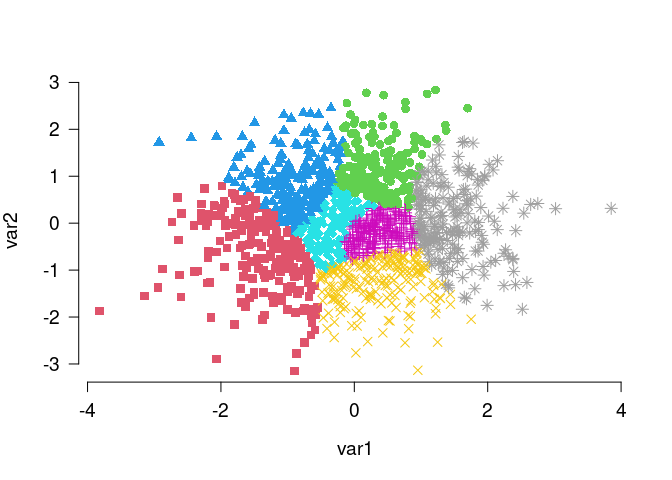
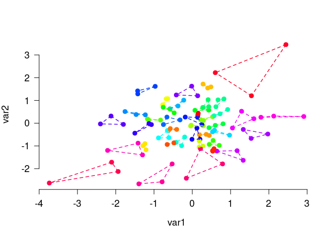

Anticlustering partitions a pool of elements into clusters (or anticlusters) with the goal of achieving high between-cluster similarity and high within-cluster heterogeneity. This is accomplished by maximizing instead of minimizing a clustering objective function, such as the intra-cluster variance (used in k-means clustering) or the sum of pairwise distances within clusters. The package anticlust implements anticlustering methods as described in Papenberg and Klau (2021; https://doi.org/10.1037/met0000301), Brusco et al. (2020; https://doi.org/10.1111/bmsp.12186), and Papenberg (in press; preprint: https://doi.org/10.31234/osf.io/7jw6v).
The stable release of anticlust is available from CRAN and can be installed via:
install.packages("anticlust")A (potentially more recent) version of anticlust can also be installed directly via Github:
library("remotes") # if not available: install.packages("remotes")
install_github("m-Py/anticlust")If you use anticlust in your research, it would be courteous if you cite the following reference:
Depending on which anticlust functions you are using, including other references may also be fair. Here you can find out in detail how to cite anticlust.
Another great way of showing your appreciation of anticlust is to leave a star on this Github repository.
anticlust
This README contains some basic information on the R package anticlust. More information is available via the following sources:
anticlust package in detail (https://doi.org/10.1037/met0000301). The freely available preprint can be retrieved from https://psyarxiv.com/3razc/. A more recent paper focusing on the k-plus anticlustering method can be retrieved from https://psyarxiv.com/7jw6v/.R documentation of the main functions is actually quite rich and up to date, so you should definitely check that out when using the anticlust package (primarily ?anticlustering, ?kplus_anticlustering, ?balanced_clustering, and ?matching).anticlustering() function. My plan is to make a similar video in English in the future.In this initial example, I use the main function anticlustering() to create three similar sets of plants using the classical iris data set:
First, load the package via
library("anticlust")Call the anticlustering() method:
anticlusters <- anticlustering(
iris[, -5],
K = 5,
objective = "kplus",
method = "local-maximum",
repetitions = 10
)The output is a vector that assigns a group (i.e, a number between 1 and K) to each input element:
anticlusters
#> [1] 1 2 2 5 5 4 3 4 4 5 1 1 2 1 2 5 3 5 3 1 5 2 1 3 5 3 3 4 3 1 2 4 2 3 1 4 5
#> [38] 4 5 3 1 2 2 4 1 4 2 3 5 4 2 4 2 2 3 4 2 5 3 3 1 5 4 1 5 1 2 3 1 3 2 2 4 4
#> [75] 5 4 1 5 5 2 4 3 3 5 5 1 2 1 5 4 2 1 5 4 3 3 4 3 1 5 4 2 1 2 1 2 3 1 2 4 2
#> [112] 5 4 2 3 1 4 3 3 5 3 4 5 4 1 5 2 4 3 3 4 4 5 1 1 5 5 2 1 2 3 1 3 5 2 1 5 3
#> [149] 4 1By default, each group has the same number of elements (but the argument K can be adjusted to request different group sizes):
table(anticlusters)
#> anticlusters
#> 1 2 3 4 5
#> 30 30 30 30 30Last, let’s compare the features’ means and standard deviations across groups to find out if the five groups are similar to each other:
knitr::kable(mean_sd_tab(iris[, -5], anticlusters), row.names = TRUE)| Sepal.Length | Sepal.Width | Petal.Length | Petal.Width | |
|---|---|---|---|---|
| 1 | 5.84 (0.84) | 3.06 (0.44) | 3.76 (1.79) | 1.20 (0.77) |
| 2 | 5.84 (0.84) | 3.06 (0.44) | 3.76 (1.79) | 1.20 (0.77) |
| 3 | 5.84 (0.84) | 3.06 (0.45) | 3.75 (1.79) | 1.20 (0.77) |
| 4 | 5.84 (0.84) | 3.06 (0.44) | 3.75 (1.79) | 1.20 (0.77) |
| 5 | 5.85 (0.84) | 3.06 (0.44) | 3.76 (1.79) | 1.19 (0.77) |
As illustrated in the example, we can use the function anticlustering() to create similar groups of plants. In this case “similar” primarily means that the means and standard deviations (in parentheses) of the variables are pretty much the same across the five groups. The function anticlustering() takes as input a data table describing the elements that should be assigned to sets. In the data table, each row represents an element (here a plant, but it can be anything; for example a person, word, or a photo). Each column is a numeric variable describing one of the elements’ features. The number of groups is specified through the argument K. The argument objective specifies how between-group similarity is quantified; the argument method specifies the algorithm by which this measure is optimized. See the documentation ?anticlustering for more details.
Four anticlustering objectives are natively supported in anticlustering():
objective = "diversity" (default)objective = "variance"
objective = "kplus"
objective = "dispersion"
The anticlustering objectives are described in detail in the documentation (?diversity_objective, ?variance_objective, ?kplus_anticlustering, ?dispersion_objective) and the references therein. It is also possible to optimize user-defined measures of cluster similarity, which is also described in the documentation (?anticlustering).
Sometimes, it is required that sets are not only similar with regard to some numeric variables, but we also want to ensure that each set contains an equal number of elements of a certain category. Coming back to the initial iris data set, we may want to require that each set has a balanced number of plants of the three iris species. To this end, we can use the argument categories as follows:
anticlusters <- anticlustering(
iris[, -5],
K = 3,
categories = iris$Species
)
## The species are as balanced as possible across anticlusters:
table(anticlusters, iris$Species)
#>
#> anticlusters setosa versicolor virginica
#> 1 17 17 16
#> 2 17 16 17
#> 3 16 17 17Anticlustering creates sets of dissimilar elements; the heterogenity within anticlusters is maximized. This is the opposite of clustering problems that strive for high within-cluster similarity and good separation between clusters. The anticlust package also provides functions for “classical” clustering applications: balanced_clustering() creates sets of elements that are similar while ensuring that clusters are of equal size. This is an example:
# Generate random data, cluster the data set and visualize results
N <- 1400
lds <- data.frame(var1 = rnorm(N), var2 = rnorm(N))
cl <- balanced_clustering(lds, K = 7)
plot_clusters(lds, clusters = cl, show_axes = TRUE)
The function matching() is very similar, but is usually used to find small groups of similar elements, e.g., triplets as in this example:
# Generate random data and find triplets of similar elements:
N <- 120
lds <- data.frame(var1 = rnorm(N), var2 = rnorm(N))
triplets <- matching(lds, p = 3)
plot_clusters(
lds,
clusters = triplets,
within_connection = TRUE,
show_axes = TRUE
)
If you have any question on the anticlust package or find some bugs, I encourage you to open an issue on the Github repository.